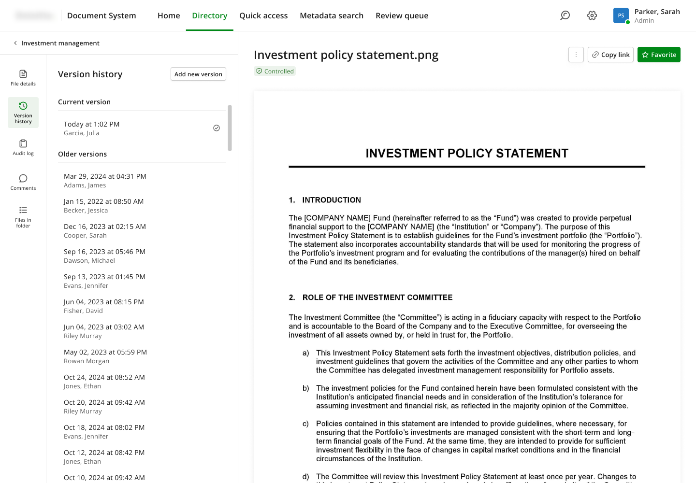
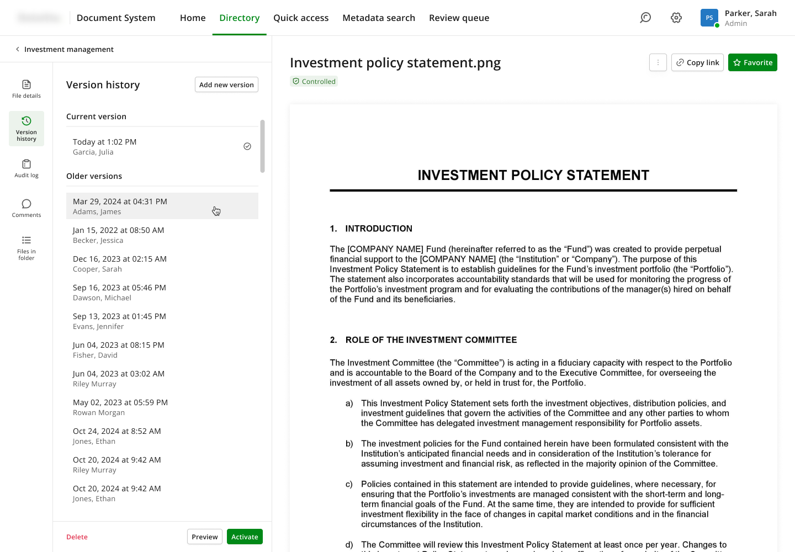
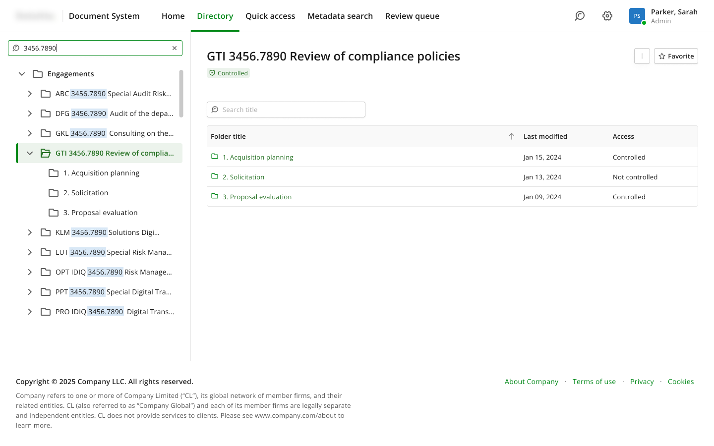
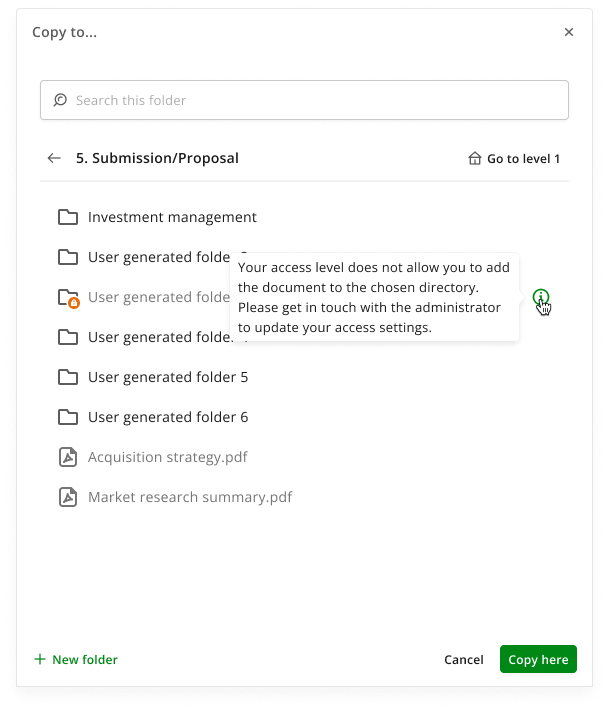
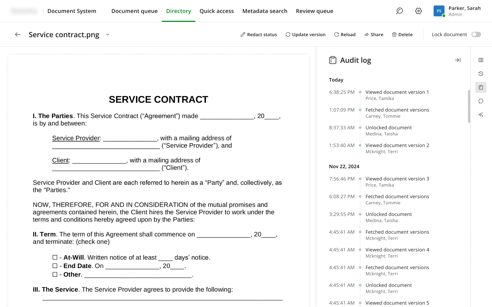
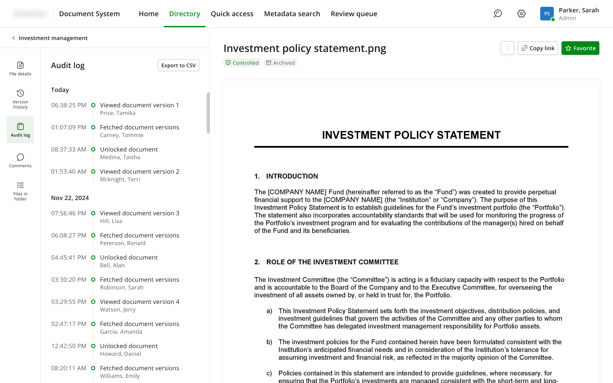
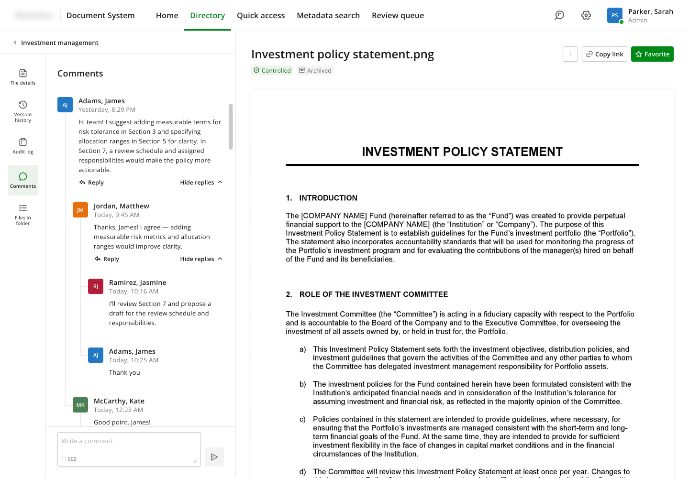
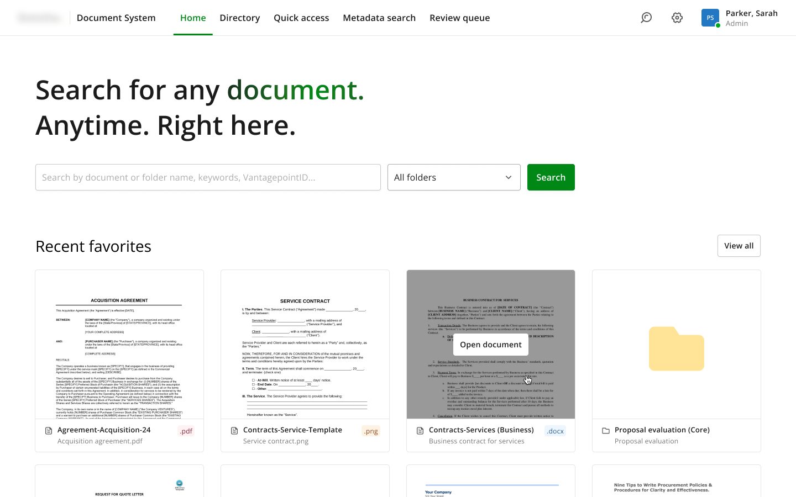
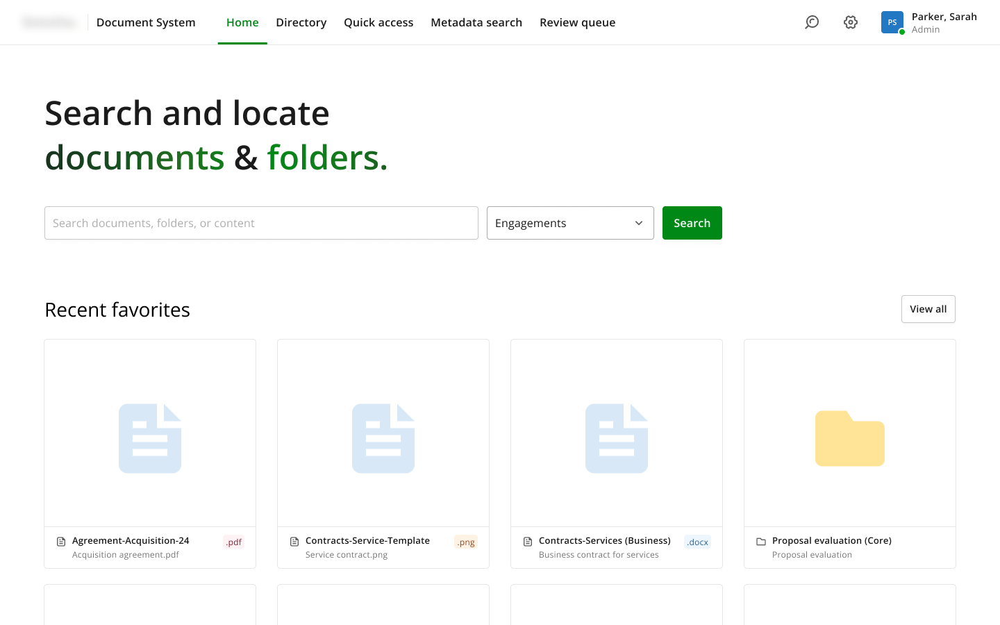

Designing for the cost of a mistake
Secure document management system, enterprise redesign

- Constraint
- Controlled information, four permission levels, live upstream integrations, and users migrating from a system they already resented.
- Decision
- Keep the layout users already knew, metadata left and document right, and change everything else.
- Trade-off
- A labelled panel takes more width than an icon strip, so the document preview is narrower than it could be.
- Role
- Sole designer, with a project manager
- Timeframe
- Around 1 year
- Context
- Replacing a legacy system for controlled documents across global teams
- Outcome
- Everything I designed was approved and went into development. Release one shipped.
[ 01 ]The situation
An organisation was running its controlled documents on a legacy platform that everybody complained about and nobody could work around. My job was to replace it.
I was the only designer on it, from the beginning of the project through to the end of release one, about a year. I worked with a project manager who owned requirements and ran the sessions with users. The design lead was available for difficult questions but was not on the project.
The brief, as it arrived, was that the old system was outdated and hard to use.
[ 02 ]What the problem actually was
I audited the existing system, reviewed its content and structure, and built a picture of what users were complaining about. Eighteen issues came out of that, and my project manager and I ran requirement sessions with real users to validate them.
Sorting by severity changed the framing entirely. The worst problems were not usability complaints. They were integrity problems:
- Deleting a document's metadata triggered chained deletions in connected systems
- The system allowed incorrect document types, which produced classification errors downstream
- Metadata did not refresh reliably, so upstream changes never arrived
- People accidentally moved or deleted things
- You could not tell whether a document was controlled from the folder view. It was implied by unclear icons, or buried in properties
- Permissions differed between directories, and nothing in the interface told a user what they were allowed to do
- Errors could not be fixed in the interface at all. They went through a support ticket
Put together, that is not a system that is hard to use. It is a system that makes it easy to quietly corrupt controlled information, hard to see that it happened, and impossible to fix without someone else.
So the problem I designed against was not "modernise the interface." It was reduce the cost of a mistake: make errors harder to make, visible when they happen, and recoverable by the person who made them.
[ 03 ]The five ideas the design rests on
Every feature we agreed with stakeholders maps to one of these.
- Mistakes become reversible. Version history with restore, deletion into a recycle bin rather than destruction, a checklist before deletion, a full audit trail with export.
- Risk becomes visible. Controlled or not-controlled shown on the document and on the folder, not hidden in properties. Flags for documents blocked by security restrictions or needing manual review. Approval status surfaced directly.
- Dangerous actions get blocked by role. System folders not editable by role, general users prevented from bulk-deleting files they did not upload, view blocked entirely without access rather than failing at the point of action.
- Finding documents stops depending on folder structure. Natural language and keyword search, results showing which keywords matched and how often, favourites, recent documents, a dashboard.
- The system stays in sync. Automatic updates from upstream services, automatic archiving by status, folder structures generated from record IDs rather than maintained by hand.
Four user roles worked across all of this: general user, reviewer, review manager and admin, each with different permissions over documents, the review process and the system itself.



[ 04 ]The hard part: the document page
Most of the system used familiar patterns. Folder structures, data tables, copy and move. Those needed care, not invention.
The document page was different, and it took the largest share of my thinking. It is the one screen where everything in the system has to coexist: the document itself, its metadata, its version history, its audit log, comments, the AI assistant, and the surrounding folder, without the user losing their place.
It is also where two of the five ideas actually reach the user. Version history and the audit trail are not features on a list. They live in this panel or they may as well not exist.
The layout decision
My first version put the document preview on the left and the panel on the right, with the panel's sections reduced to a narrow strip of icon-only buttons. I rejected it for four reasons.


- Icons alone do not carry meaning. A trash icon is universal. Version history, audit log and file details are not. Icon-only navigation works when the icons are self-evident, and these were not, so the sections got labels.
- Users already knew a layout. In the legacy system, metadata sat on the left and the document on the right. Keeping that mapping meant people were not relearning navigation during a migration they had not asked for.
- Reading order. The primary work area belongs on the left, where the eye starts.
- They already knew this pattern from elsewhere. These users were in Microsoft Teams every day, which uses a very similar labelled panel. Borrowing a pattern people use daily costs nothing and means no learning curve.
In a redesign of a system users already resent, preserving spatial memory while changing everything else is worth more than a fresh start.
The trade-off: the labelled panel takes more horizontal space than an icon strip, so the document preview is narrower. I chose comprehension over preview size, on the grounds that people open this screen to act on a document, not to read it at full width.
The file details section was also restructured into two scannable columns with a clear hierarchy, so the information users needed most was not buried.

[ 05 ]When the constraints won
I designed the home tab with a grid of documents and folders showing content previews, because people recognise documents by what is inside them far faster than by filename.
Development came back with two problems. The small animation I had designed for the title was not feasible, so the title became static. And document previews could not be rendered at all, for security reasons I was not given the full details of.
The replacement was large format icons with the title and file type. Weaker than what I wanted, and it is worth naming why it happened: this is a system built to protect controlled information, and the security posture that makes it valuable is the same one that made my preview design impossible.


The constraint that killed the idea was the reason the product exists.
[ 06 ]Validation, and its limits
Designs went in front of real users and stakeholders in sessions several times a week across the year. They reviewed the work, commented on whether it fit how they worked, and the design changed in response. That is continuous validation and it is the reason the work held up.
What it was not is usability testing. I never watched anyone use the system. I heard what users said about designs; I did not see what they did with them. Usability testing happened after handoff and I was not part of it.
Everything I designed was approved and went into development. I saw parts of it built before moving to another project, and my project manager confirmed the rest was implemented. A second designer joined afterwards for release two, which was new scope rather than a revision of my work.
What I would have measured
I did not own this through launch, so these are the metrics I would have pushed for rather than results.
The one I would have anchored on already existed: the volume of support tickets raised to correct document errors. Users could not fix mistakes themselves, so every error became a ticket, and that cost was already being tracked before I arrived. It is the cleanest before-and-after available.
- Restores from the bin and version rollbacks, as a measure of accidental damage, which only became visible because recovery now existed
- Time to find a known document, the thing users would feel most
- Access-denied events per user, meaning people attempting things the interface never told them they could not do
[ 07 ]What I would do differently
More validation, of a different kind. I would want to watch people work in the implemented system, particularly around recovery: whether anyone finds version history when they need it, and whether the controlled indicator actually registers before someone acts.
Seeing it live. I designed release one and handed it to development complete, then moved on. I would want to have stayed through implementation, not to protect the design but to learn from it. Watching a system meet real work is where you find out which of your decisions were right for the reasons you thought, and I never got that on this one.